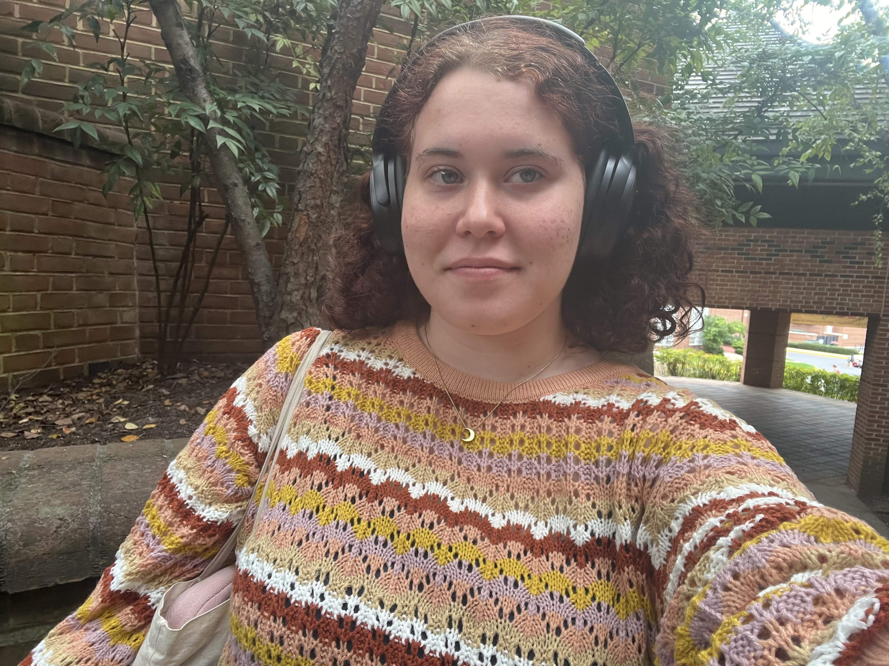

Journalist
I write articles about the College Park Area for a local monthly newspaper. Some of the articles I have written include a story on College Park’s celebration of the National Night Out, and a story on the College Park Youth Orchestra.
I wrote short blurbs, social media posts, and press releases, and translated social media posts into Spanish for a national cardiology organization focused on heart health and cardiologist education
I write articles on Prince George’s County, primarily focusing on the county council and school board, for The Diamondback, a student newspaper at UMD, pitching two stories a week. I previously covered UMD’s Student Government Association, writing stories on their weekly meetings and various bills.
I led Girl Scouts in a variety of nature related activities during their one to two week sleepaway camps.
I co-founded a podcast focusing on women’s history and interviewed women on a variety of topics including transphobia and colorism.
Contact me